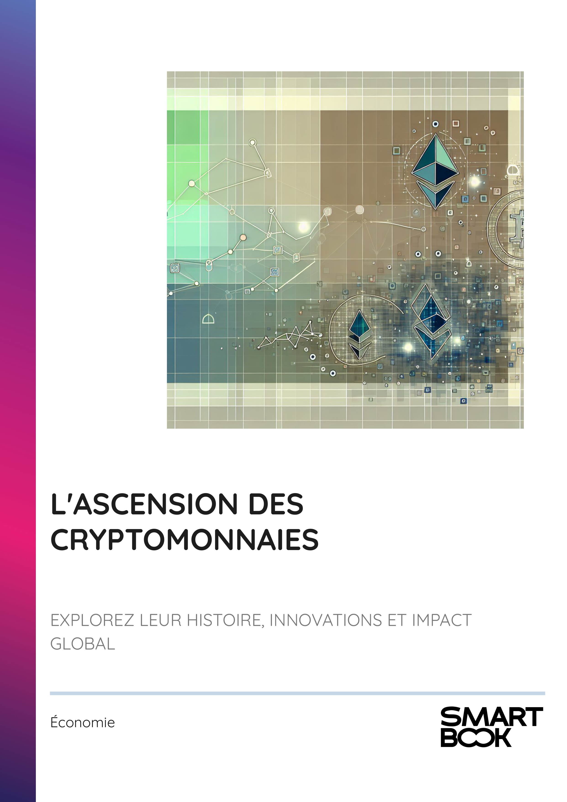

- INTRODUCTION - L'ESSOR DES MONNAIES NUMÉRIQUES : UNE RÉVOLUTION EN MARCHE
- Chapitre 1 - LES ORIGINES DES MONNAIES NUMÉRIQUES : DE DAVID CHAUM À BTC
- Chapitre 2 - L'ÉMERGENCE DE BTC ET LA RÉVOLUTION DE LA BLOCKCHAIN
- Chapitre 3 - L'ESSOR D'ETHEREUM ET DES CONTRATS INTELLIGENTS
- Chapitre 4 - LES CYCLES DE VOLATILITÉ : ANALYSE DE LA BULLE DE 2017 ET DU MARCHÉ BAISSIER DE 2018
- Chapitre 5 - L'ADOPTION INSTITUTIONNELLE DES CRYPTOMONNAIES : CAS ET IMPLICATIONS
- Chapitre 6 - LES INNOVATIONS RÉCENTES EN MATIÈRE DE CRYPTOMONNAIES (2025)
- Chapitre 7 - LA FINANCE DÉCENTRALISÉE (DEFI) ET SON IMPACT SUR LE SECTEUR FINANCIER
- Chapitre 8 - LES ENJEUX ÉTHIQUES ET RÉGLEMENTAIRES DES CRYPTOMONNAIES
- CONCLUSION - VERS UN AVENIR FAÇONNÉ PAR LES CRYPTOMONNAIES
📄 Consulter les annexes du livre
Mentions légales